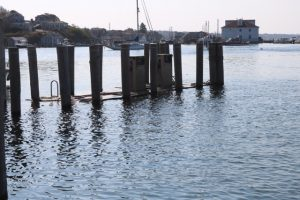

 Rising seas threaten the infrastructure needed for jobs, industry, recreation and everyday life. Roads, bridges, subways, port facilities, piers, docks, oil and gas wells, power (including nuclear!) plants, sewage treatment plants, coastal levies -- the list is practically endless -- are all at risk from sea level rise. Rising seas threaten fish habitat, including coral reefs and mangrove forests, and freshwater aquifers. Rising seas are leading to rapid coastal erosion of cliffs and dunes in some local shoreline regions and affect shoreline access for recreational activities. The seas are rising and will rise faster later this century. The historical data is clear and the scientific consensus is unequivocal. Even so, the rate of change is small, and the desire to adapt to sea level increase is not overwhelming. This is unfortunate because sea level rise directly affects public safety, local fisheries, shipping and trade. Indeed, since human society has flourished during a period of relative sea level stability, almost all of our coastal infrastructure and livelihood is built around the current height of the ocean.
A wealth of ocean data has been and is being collected. Many of the datasets are open, yet very few are being used for resource management, business, or conservation. Most businesses, let alone individuals, do not have the time or ability to translate ocean data into actionable information, yet large industries and millions of people rely on the ocean for their livelihoods and well-being.
So long as ocean data remain disconnected from services that people and markets can use, we will be unable to engage the numbers of actors needed to address critical ocean challenges. Data collection is not evenly distributed across the ocean -- some regions are in need of data acquisition, a need that could be addressed through the development of demand for data services, which will in turn drive demand for data collection tools. Overall, there is a market failure for meaningful data services, and the time is ripe for market development.
You can read more about our HeroX submission on our application page.
Data for the sea level rise overlay shown in our app are from the NOAA Office for Coastal Management. Modeling of relative sea level rise is complicated, and requires more than just moving sea level up by some number. NOAA provides these data for free via a WMS server for easy integration.